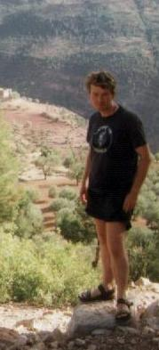
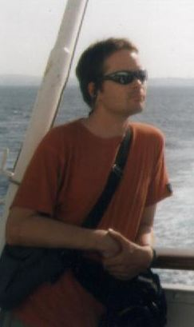
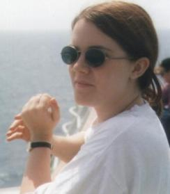
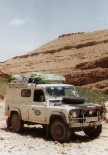

Meet the team...
Sam

Sam Watson, intrepid explorer. Currently a teacher in York, but eager
to travel the world. Here he poses in his Clachaig Inn t-shirt. Its a
pub - nay, the pub in Glencoe. Interests include climbing,
the Army, the RAF (aka blue jobs) and the navy (aka `The Grey Funnel Line'). And Land Rovers. Sam has web pages all about
Elsa and trips with her.
Baz

Barry Rowlingson, aka Baz. He's a Research Associate and Computing
Officer in Lancaster. He has known Sam for a good few years, since Sam
was an undergraduate at the university. Baz has travelled in the USA
and Europe, but this was his first expedition in Africa. Now he's
eager to cover Asia and Australasia.
Abbie

Abigail Fulbrook, public relations expert-in-waiting. She's studying
in Watford for a diploma in PR. She's Sam's girlfriend's best friend's
sister. Commended for bravery for volunteering to spend four weeks in
a Land Rover with two blokes she hardly knew.
Elsa

Elsa, aka `the transport'. An ex-marine Land Rover Defender 110, she
has spent most of her life sitting on an aircraft carrier. Then every
winter she was taken to Norway where a bunch of squaddies would walk
all over her. She's fully winterised, which means there's radiators
under the front seats and one along the back. Great for Scottish
winters, but not so good for the Sahara. And Sam hasn't fixed her so
that they can be turned off. The driver's door has a habit of flying
open. She smoked a lot. The roof rack occasionally bounced out. The
cigarette lighter was bodged on by Baz. In the back Sam has installed
bunk beds and a wash basin. She's tough as old boots and gets you
where you want to go. She has her own web pages that Sam has written.
Home Page